American Pop Art on Stamps
Roy Lichtenstein & Andy Warhol
American Pop Art emerged in the late 1950s and flourished in the 1960s, drawing on advertising, comics, consumer products and mass media. Roy Lichtenstein and Andy Warhol became two of its most influential figures. Postage stamps offer a particularly fitting medium for their art: small, mechanically reproduced images circulating through everyday life.
Roy Lichtenstein1923–1997
Life and career
Roy Lichtenstein was born in New York City on October 27, 1923. He studied art at Ohio State University, served in the U.S. Army during the Second World War, and returned to complete his studies. After teaching and experimenting with several styles, he developed his distinctive Pop Art language around 1961. He died in New York on September 29, 1997.
Artistic language
His paintings transformed the visual conventions of comic books and commercial printing into monumental art. Thick black outlines, flat primary colours and carefully painted Ben-Day-style dots mimic mechanical reproduction while remaining deliberately constructed by hand. Works such as Look Mickey (1961), Whaam! (1963) and Drowning Girl (1963) exemplify this approach. Later he reinterpreted still lifes, landscapes and the work of earlier artists, showing that his interests extended far beyond comics.
Philatelic gallery
The United States honoured Lichtenstein in 2023 with five Forever stamp designs. The supplied material includes a block of four different designs, a complete mixed-design pane, a pane repeating one design, and two first-day items. The first-day cancellation echoes his graphic vocabulary.
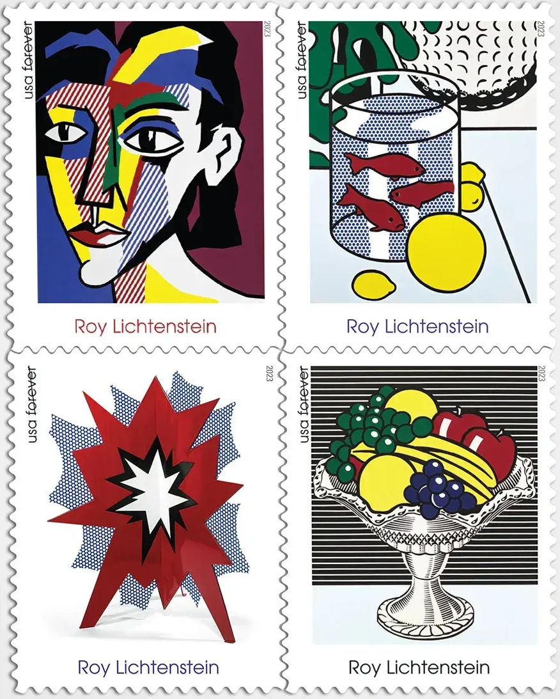
The block brings several of Lichtenstein’s compositions together, allowing their contrasting colours and graphic forms to be compared at a glance.
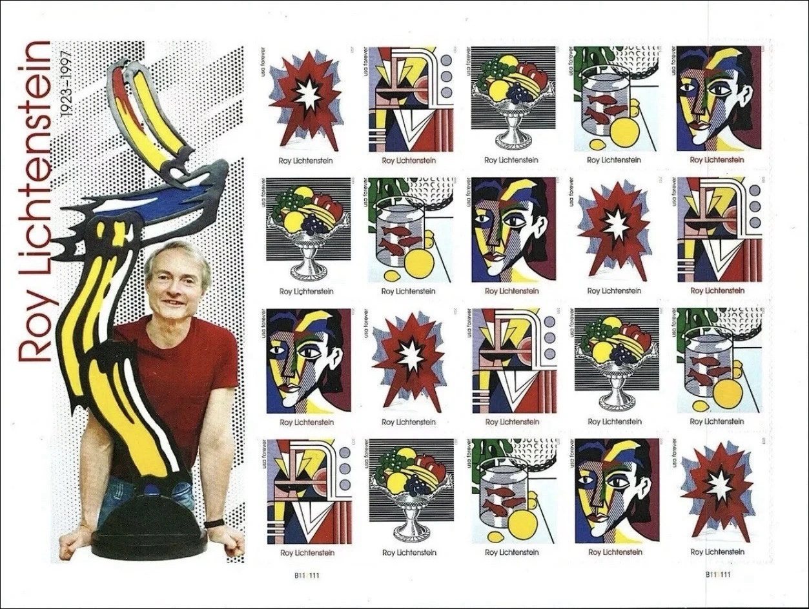
The complete pane extends the visual experience beyond the individual perforated images through its illustrated margin.
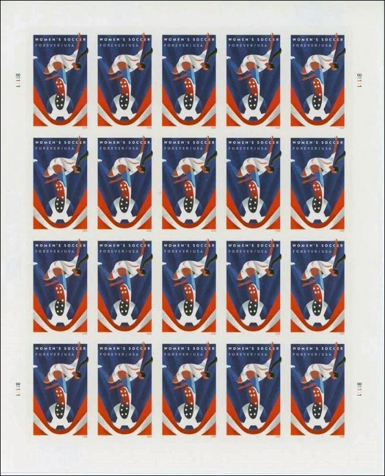
Repetition of a single composition creates a regular pattern, recalling the printed imagery that inspired Lichtenstein.
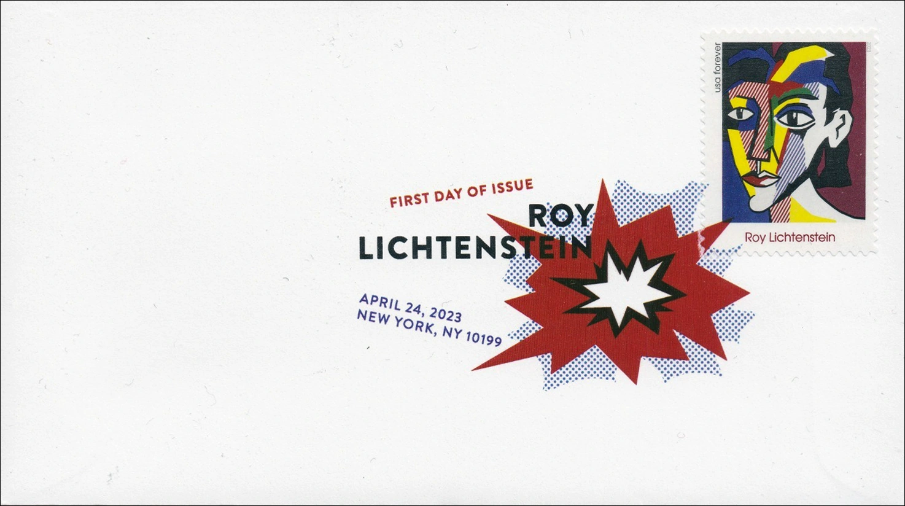
The first-day cover combines the stamp with a dated cancellation, adding a documentary dimension to the artwork.
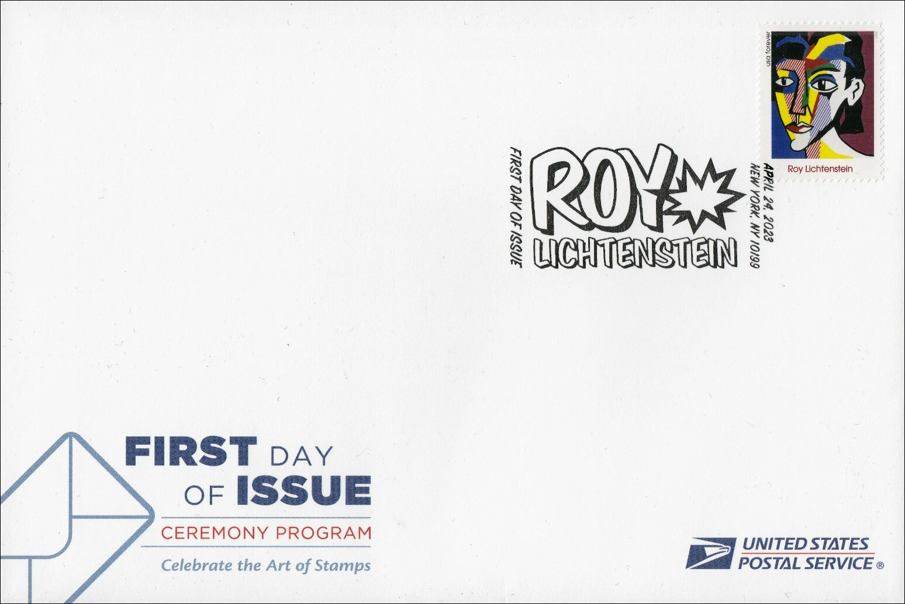
Andy Warhol1928–1987
Life and career
Andy Warhol was born Andrew Warhola in Pittsburgh on August 6, 1928, to a family of immigrants from what is now Slovakia. He studied pictorial design at Carnegie Institute of Technology and moved to New York in 1949, establishing himself as a commercial illustrator. In the early 1960s he became a central figure in American Pop Art. His studio, the Factory, brought together artists, musicians and filmmakers. He died in New York on February 22, 1987.
Artistic language
Warhol made consumer goods, celebrity portraits and newspaper photographs the subjects of art. Campbell’s Soup Cans (1962), Marilyn Diptych (1962) and his later portraits demonstrate his interest in repetition, fame and mass production. Photographic screenprinting allowed him to repeat an image while varying colour, registration and surface. He also explored film, publishing and performance. His work can be read both as a celebration of popular culture and as a questioning of its values.
Philatelic gallery
The U.S. 37-cent Andy Warhol commemorative was issued in 2002, not 2001 as one supplied filename suggests. Its repeated self-portrait is especially appropriate to his artistic method. The French 2003 stamp reproduces his Marilyn imagery. The supplied 2015 first-day cover features a Warhol-inspired cachet; its postage stamp should not be confused with an official Warhol commemorative. Two items inscribed Somalia are shown separately as material of unverified postal status, not as authenticated national issues.
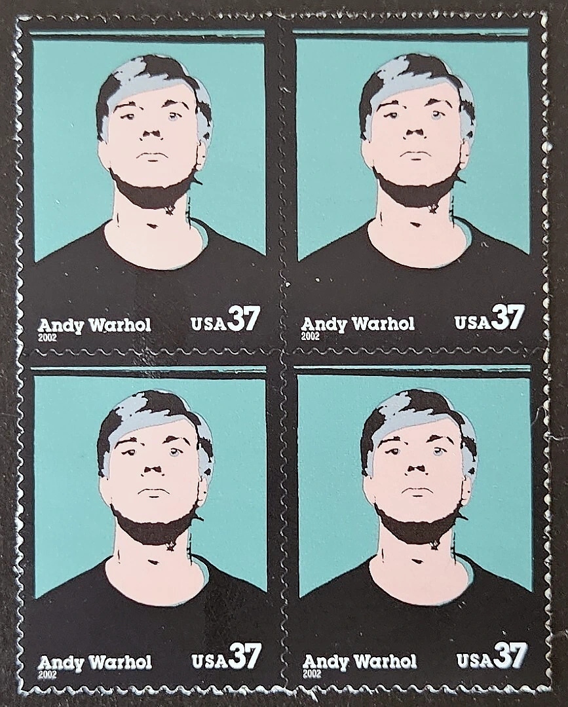
The block of four illustrates how the repeated portrait becomes a composition in its own right.
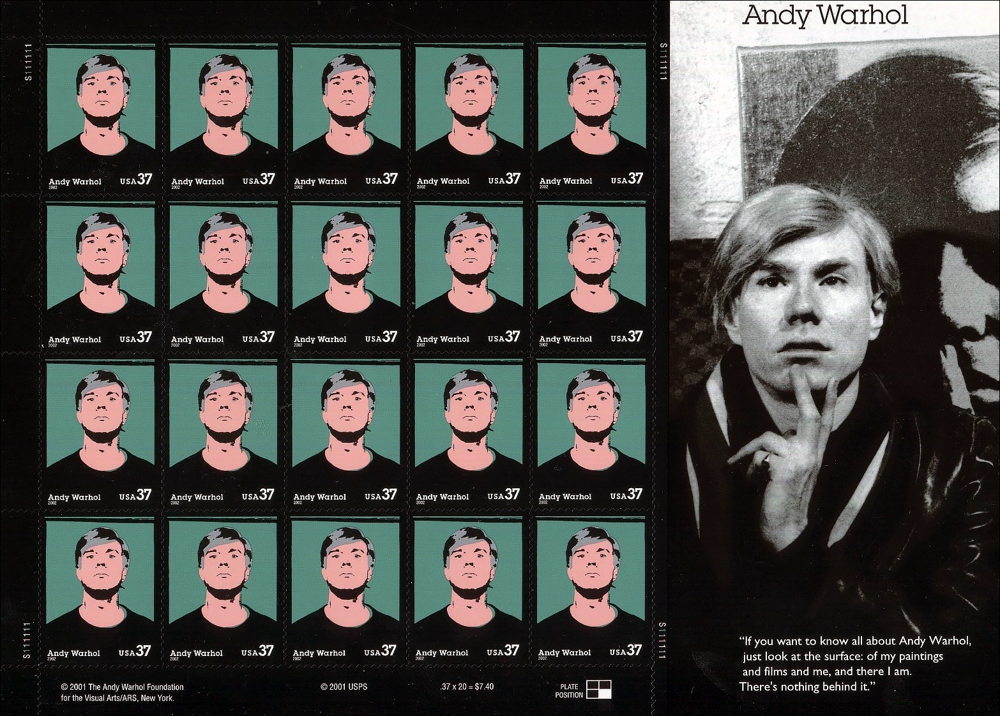
The larger pane places the repeated image alongside a portrait in the margin, reinforcing the relationship between artist and subject.
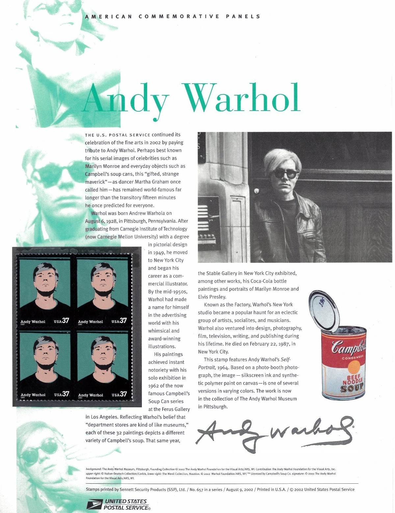
The illustrated panel offers another way of presenting the commemorative issue to collectors.
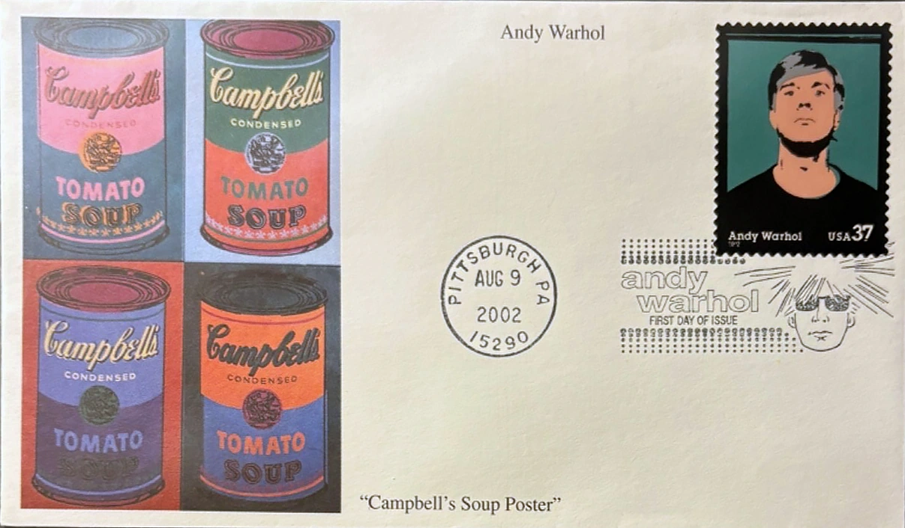
The Campbell’s Soup imagery on the cover recalls Warhol’s transformation of familiar consumer packaging into art.
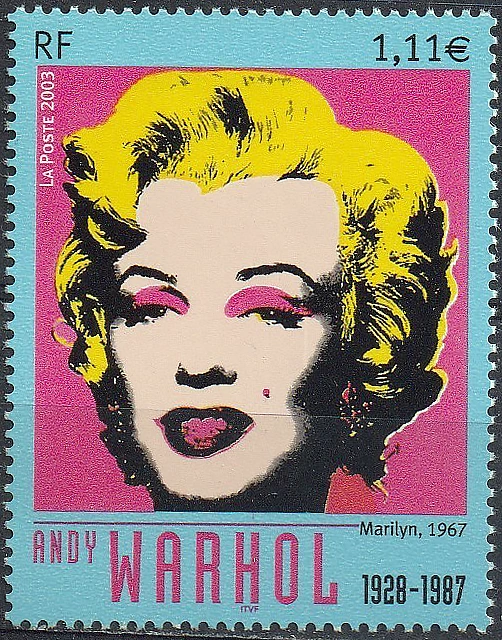
The French stamp turns to another central theme of Warhol’s work: the celebrity image. The following cover illustrates the distinction between a postal stamp and its accompanying decorative cachet.
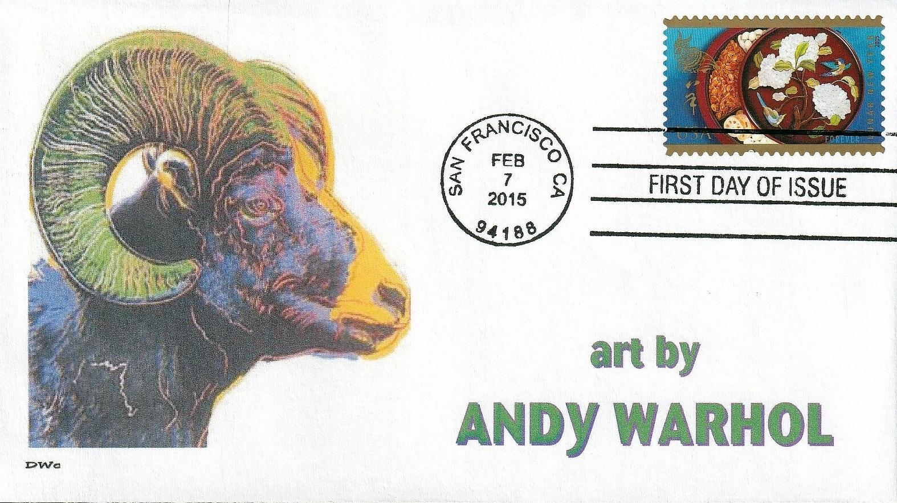
Material of unverified postal status
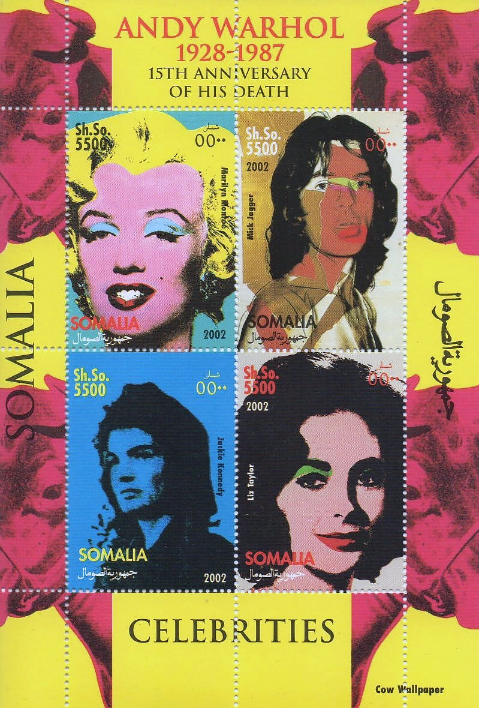
The second item similarly draws on Warhol’s celebrity imagery. Neither item is presented here as an authenticated postal issue.
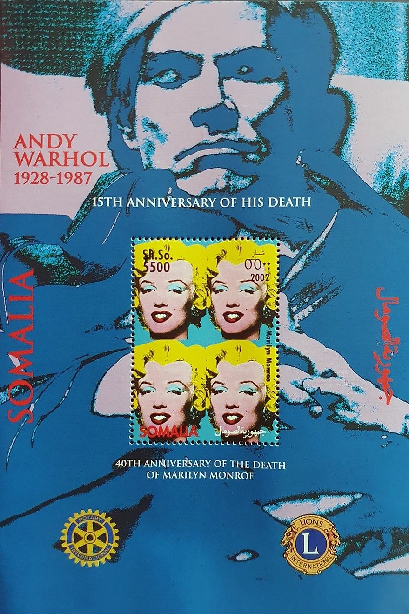
Two visions of American Pop Art
Shared language
Both artists challenged the hierarchy between fine art and commercial imagery. Both used recognizable motifs, bold colour and the appearance of industrial reproduction. Their work invites viewers to reconsider familiar images rather than dismiss them as ordinary.
Different methods
Lichtenstein reconstructed and simplified printed imagery, often using painstakingly painted dots and crisp contours. Warhol employed photographic screenprinting and serial repetition, embracing variations and imperfections associated with reproduction.
Different subjects
Lichtenstein often explored the visual grammar of comics and the history of painting. Warhol concentrated on commodities, celebrity, publicity and mortality. Neither artist can be reduced to a single subject or technique.
On postage stamps
Lichtenstein’s 2023 U.S. issue presents several distinct compositions, while Warhol’s 2002 U.S. issue repeats a self-portrait. The panes themselves thus offer a striking parallel to the artists’ respective approaches: variation across designs and repetition of an iconic image.
Further reading
Roy Lichtenstein Foundation · The Andy Warhol Museum · Museum of Modern Art
Published November 26, 2026 · Victor Manta, USA. Illustrations from the supplied philatelic collection.